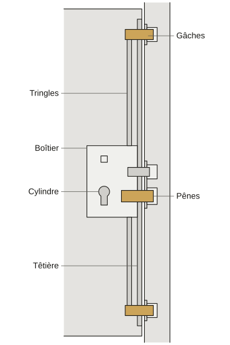
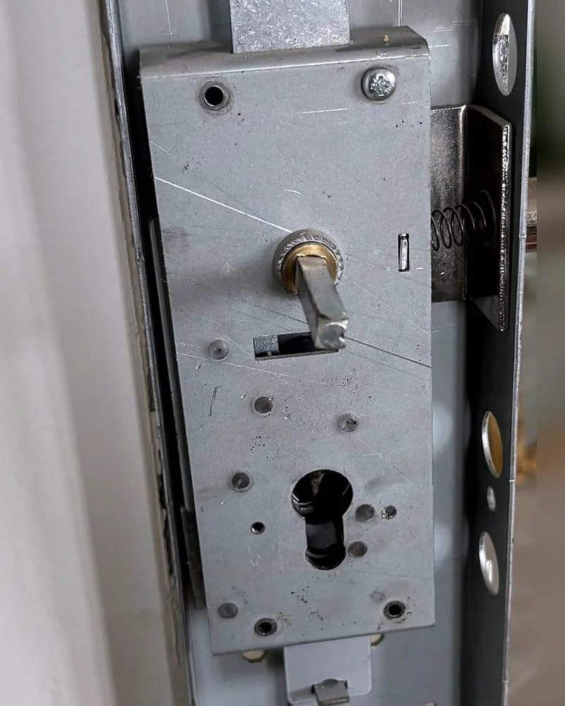

- Accueil
- Guides de serrurerie
- Serrure 3 points bloquée
Serrure 3 points bloquée : ce que vous pouvez vérifier vous-même
Une serrure 3 points bloquée vient souvent de la porte plus que de la serrure : la porte a bougé et les points de fermeture frottent dans le cadre.
Ne forcez pas la clé. Soulevez ou plaquez doucement la porte en tournant. Si la clé tourne dans le vide ou si vous êtes bloqué dehors, appelez un serrurier.
Ce qu’il y a dans la tranche de votre porte
Une serrure 3 points ferme la porte à trois hauteurs à la fois avec une seule clé : au milieu, en haut et en bas.
- Le boîtier : la serrure elle-même, encastrée à mi-hauteur dans l’épaisseur de la porte.
- Le cylindre : la pièce où entre la clé. Sa partie qui tourne s’appelle le rotor.
- Le panneton : une petite patte de métal au milieu du cylindre. Elle tourne avec la clé et actionne le boîtier.
- Les tringles : deux tiges de métal cachées dans la tranche de la porte. L’une monte et l’autre descend.
- Les pênes : les pièces qui sortent de la porte pour la bloquer. Un au milieu, un au bout de chaque tringle, parfois en crochet.
- La têtière : la longue plaque de métal que vous voyez de haut en bas sur la tranche. Les pênes en sortent.
- Les gâches : les pièces vissées dans le cadre en face de chaque pêne. Chaque pêne vient s’y loger.
Tout tient à un alignement. Si la porte descend de quelques millimètres, les pênes du haut et du bas ne tombent plus en face de leurs gâches.
La clé force et pourtant la serrure n’a rien.


La clé tourne, mais force à mi-course
C’est un cas très fréquent et souvent le moins grave.
La porte a bougé : des gonds ont pris du jeu, le bois a gonflé à l’humidité ou le cadre a travaillé.
Faites le test porte ouverte. Si la clé tourne sans effort porte ouverte mais force porte fermée, la serrure va bien.
Il faut alors régler la porte ou les gâches sur rendez-vous. La visite et le devis sont gratuits.
La clé ne tourne pas du tout
Si votre poignée se remonte pour fermer la porte, remontez-la jusqu’au bout avant de tourner la clé.
Puis regardez la clé. Un double usé, mal taillé ou un peu tordu peut suffire à bloquer un cylindre. Essayez l’autre clé du trousseau.
Si aucune clé ne tourne même porte ouverte, le cylindre est sans doute encrassé ou abîmé. Ne forcez pas : une clé cassée dedans complique tout.
La clé tourne dans le vide
Elle fait le tour sans rien entraîner : le panneton ne pousse plus le boîtier.
La casse est souvent dans le cylindre ou dans la serrure. Parfois, le cylindre a glissé parce que sa vis s’est desserrée.
Si la porte est fermée et que vous êtes dehors, c’est une ouverture de porte : appelez.
Si la porte est ouverte, rien ne presse tant que vous pouvez la fermer à clé pour la nuit.
Vous êtes à l’intérieur et la porte ne s’ouvre plus
Si quelqu’un est en danger ou doit sortir tout de suite (fumée, malaise), appelez le 18 ou le 112 plutôt qu’un serrurier.
Sinon rien ne presse : essayez calmement les gestes ci-dessous.
Si rien ne bouge, vous pouvez attendre le matin. Le déplacement et le diagnostic coûtent 95 € TTC de 21 h à 6 h au lieu de 75 € TTC.
Si vous devez sortir avant, un serrurier vient aussi la nuit et le prix vous est annoncé avant son départ.
Ce que vous pouvez essayer sans risque
- Soulever la porte par sa poignée pendant que vous tournez la clé.
- La plaquer contre son cadre en tournant : tirez-la vers vous si elle s’ouvre de l’autre côté et poussez-la si elle s’ouvre vers vous.
- Essayer le double de la clé.
- Regarder ce qui frotte en bas : un paillasson, le seuil ou un gravier coincé sous la porte.
- Tourner lentement et sans à-coups, jamais avec un outil sur la clé.
Ce qu’il vaut mieux éviter, et pourquoi
- Forcer avec une pince ou un tournevis glissé dans l’anneau de la clé. Elle risque de casser dans le cylindre et il faudra d’abord en sortir le morceau.
- Verser de l’huile de cuisine ou de la graisse épaisse : elles retiennent la poussière et encrassent le cylindre.
- Graisser avec un dégrippant : il aide à débloquer sur le moment mais il n’est pas fait pour entretenir une serrure.
- Donner des coups d’épaule ou de pied : les gâches se tordent et la porte risque de ne plus fermer du tout.
Quand appeler, et qui
- Vous êtes dehors et la porte ne s’ouvre pas : c’est une ouverture de porte.
- La clé tourne dans le vide ou plus aucune clé ne tourne même porte ouverte : appelez un serrurier.
- Quelqu’un est enfermé et en danger : appelez d’abord le 18 ou le 112.
- La porte s’ouvre mais force : rien ne presse et un réglage se fait sur rendez-vous.
De nuit le serrurier fait le nécessaire pour que la porte ferme. Changer une pièce qui fonctionne encore se décide de jour avec le devis en main.
Il fixe le prix sur place dans un devis écrit avant de commencer. Le déplacement et le diagnostic coûtent 75 € TTC, ou 95 € TTC de 21 h à 6 h.
Ils sont compris dans le prix si vous acceptez le devis. Si vous le refusez, vous ne réglez qu’eux. Un SMS vous redit cette règle après l’appel.
Régler, réparer ou changer ?
Une porte qui a bougé se règle : on reprend les gonds ou l’on déplace les gâches. Le plus souvent, un réglage suffit.
Un cylindre usé se remplace seul sans toucher au boîtier. Sur une serrure encastrée, il tient par une longue vis sur la têtière.
Un boîtier ou une tringle cassés se remplacent si le fabricant fournit encore la pièce. Sinon c’est tout le mécanisme qui change et le devis le dit.
Si vous êtes locataire, prévenez votre propriétaire ou votre agence avant un remplacement.
Les questions qu’on nous pose sur les serrures 3 points
Comment débloquer une serrure 3 points, porte fermée ?
Avec votre clé, soulevez ou plaquez la porte en tournant doucement. Si rien ne bouge, arrêtez : la clé risque de casser.
Que faire si la poignée de ma serrure 3 points ne remonte plus ?
Soulevez la porte et remontez doucement la poignée. Si elle résiste, la porte ne ferme plus à clé : faites venir un serrurier.
Quel produit mettre dans une serrure 3 points ?
Un lubrifiant vendu pour les serrures (graphite ou spray sec), une fois par an, dans le cylindre et sur les pênes. Jamais d’huile ni de graisse.
Peut-on changer seulement le cylindre d’une serrure 3 points ?
Oui, si lui seul est usé et que la serrure prend un cylindre européen (trou rond prolongé d’une fente). Mesurez-le avant.
Combien coûte le remplacement d’une serrure 3 points ?
Sur devis gratuit, après une visite. Un cylindre seul coûte moins qu’un mécanisme complet, et la porte compte aussi.